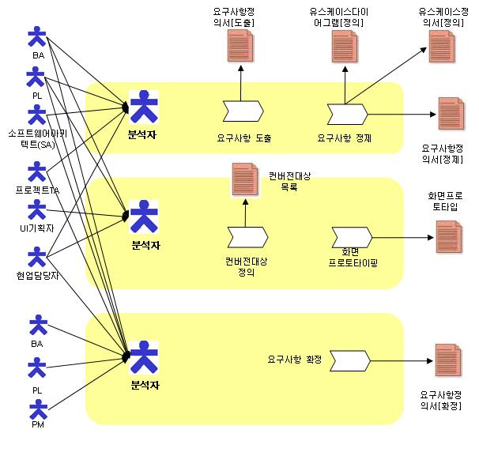

| Concept: 요구사항정의활동 개요 |
 |
|
1. 개요 (Overview)
2. 수행 공정(Task)
3. 공정/산출물/역할간의 관계(Process, Deliverables & Role Relationship)

4. 테일러링 가이드(Tailoring Guide) 4.1 EA/ISP등이 수행되었거나, 기존시스템을 유지보수하는 상황에서 개선시스템(고도화, 혹은 2차)을 개발할 경우 기존시스템의 산출물을 신시스템의 기능 요구사항을 도출하는데 활용하고, 기존시스템의 화면을 통하여 요구사항을 정제할 경우 화면 프로토타이핑은 최소화 할 수 있다. 4.2 기능 요구사항에 대하여는 반드시 유스케이스 모델과 매핑관계를 유지하도록 하며, 유스케이스정의서를 통하여 상세화된 요구사항을 고객과 협의하여 확정하도록 한다. 4.3 요구사항의 베이스라인이 설정된 후에는 요구사항 변경절차를 준수하도록 한다. 5. 고려사항(Considerations) 5.1 고객의 요구사항을 명확히 하여 업무범위를 확정하는 것은 가장 중요한 사항이다. 하지만 모든 기능에 대하여 유스케이스정의서를 상세하게 작성하고, 화면 프로토타이핑을 통하여 검증하는 것은 현실적으로 가능하지 않는 상황이 더 많다. 따라서 주요비즈니스 흐름을 추적하는 기능과 화면에 집중할 수 있도록 하여 과도한 노력이 들지 않도록 고려해야 한다. 5.2 기능 요구사항에 대하여는 유스케이스 모델을 통하여 상세화 되어가지만 비기능 요구사항에 대하여는 상세한 추적이 어려운 점이 있다. 하지만 아키텍처 정의를 통하여 성능, 보안, 안정성 등이 반영되도록 추적성을 확보할 수 있도록 고려해야 한다. |